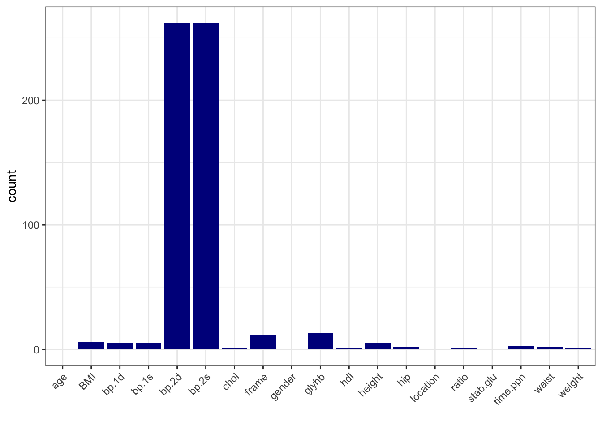
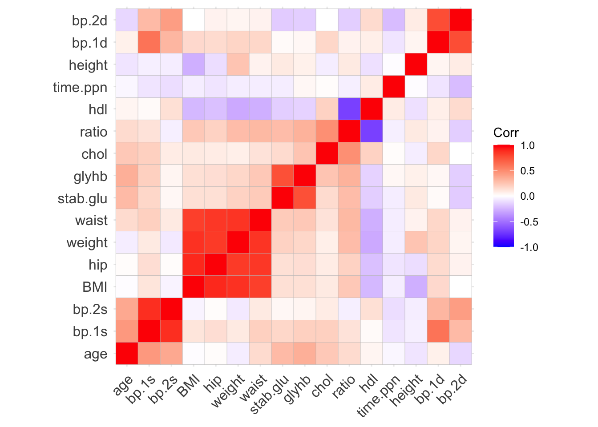

# load libraries
library(tidyverse)
library(tidymodels)
library(ggcorrplot)
library(reshape2)
library(vip)
# import raw data
input_diabetes <- read_csv("data/data-diabetes.csv")
# create BMI variable
conv_factor <- 703 # conversion factor to calculate BMI from inches and pounds BMI = weight (lb) / [height (in)]2 x 703
data_diabetes <- input_diabetes %>%
mutate(BMI = weight / height^2 * 703, BMI = round(BMI, 2)) %>%
relocate(BMI, .after = id)
# preview data
glimpse(data_diabetes)
## Rows: 403
## Columns: 20
## $ id <dbl> 1000, 1001, 1002, 1003, 1005, 1008, 1011, 1015, 1016, 1022, 1…
## $ BMI <dbl> 22.13, 37.42, 48.37, 18.64, 27.82, 26.50, 28.20, 34.33, 24.51…
## $ chol <dbl> 203, 165, 228, 78, 249, 248, 195, 227, 177, 263, 242, 215, 23…
## $ stab.glu <dbl> 82, 97, 92, 93, 90, 94, 92, 75, 87, 89, 82, 128, 75, 79, 76, …
## $ hdl <dbl> 56, 24, 37, 12, 28, 69, 41, 44, 49, 40, 54, 34, 36, 46, 30, 4…
## $ ratio <dbl> 3.6, 6.9, 6.2, 6.5, 8.9, 3.6, 4.8, 5.2, 3.6, 6.6, 4.5, 6.3, 6…
## $ glyhb <dbl> 4.31, 4.44, 4.64, 4.63, 7.72, 4.81, 4.84, 3.94, 4.84, 5.78, 4…
## $ location <chr> "Buckingham", "Buckingham", "Buckingham", "Buckingham", "Buck…
## $ age <dbl> 46, 29, 58, 67, 64, 34, 30, 37, 45, 55, 60, 38, 27, 40, 36, 3…
## $ gender <chr> "female", "female", "female", "male", "male", "male", "male",…
## $ height <dbl> 62, 64, 61, 67, 68, 71, 69, 59, 69, 63, 65, 58, 60, 59, 69, 6…
## $ weight <dbl> 121, 218, 256, 119, 183, 190, 191, 170, 166, 202, 156, 195, 1…
## $ frame <chr> "medium", "large", "large", "large", "medium", "large", "medi…
## $ bp.1s <dbl> 118, 112, 190, 110, 138, 132, 161, NA, 160, 108, 130, 102, 13…
## $ bp.1d <dbl> 59, 68, 92, 50, 80, 86, 112, NA, 80, 72, 90, 68, 80, NA, 66, …
## $ bp.2s <dbl> NA, NA, 185, NA, NA, NA, 161, NA, 128, NA, 130, NA, NA, NA, N…
## $ bp.2d <dbl> NA, NA, 92, NA, NA, NA, 112, NA, 86, NA, 90, NA, NA, NA, NA, …
## $ waist <dbl> 29, 46, 49, 33, 44, 36, 46, 34, 34, 45, 39, 42, 35, 37, 36, 3…
## $ hip <dbl> 38, 48, 57, 38, 41, 42, 49, 39, 40, 50, 45, 50, 41, 43, 40, 4…
## $ time.ppn <dbl> 720, 360, 180, 480, 300, 195, 720, 1020, 300, 240, 300, 90, 7…
# run basic EDA
# note: we have seen descriptive statistics and plots during EDA session
# note: so here we only look at missing data and correlation
# calculate number of missing data per variable
data_na <- data_diabetes %>%
summarise(across(everything(), ~ sum(is.na(.))))
# make a table with counts sorted from highest to lowest
data_na_long <- data_na %>%
pivot_longer(-id, names_to = "variable", values_to = "count") %>%
arrange(desc(count))
# make a column plot to visualize the counts
data_na_long %>%
ggplot(aes(x = variable, y = count)) +
geom_col(fill = "blue4") +
xlab("") +
theme_bw() +
theme(axis.text.x = element_text(angle = 45, vjust = 1, hjust=1))
# calculate correlation between numeric variables
data_cor <- data_diabetes %>%
dplyr::select(-id) %>%
dplyr::select(where(is.numeric)) %>%
cor(use = "pairwise.complete.obs")
# visualize correlation via heatmap
ggcorrplot(data_cor, hc.order = TRUE, lab = FALSE)
# based on the number of missing data, let's delete bp.2s, bp.2d
# and use complete-cases analysis
data_diabetes_narm <- data_diabetes %>%
dplyr::select(-bp.2s, -bp.2d) %>%
na.omit()
